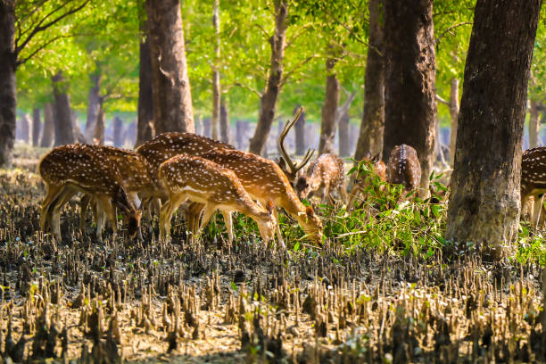
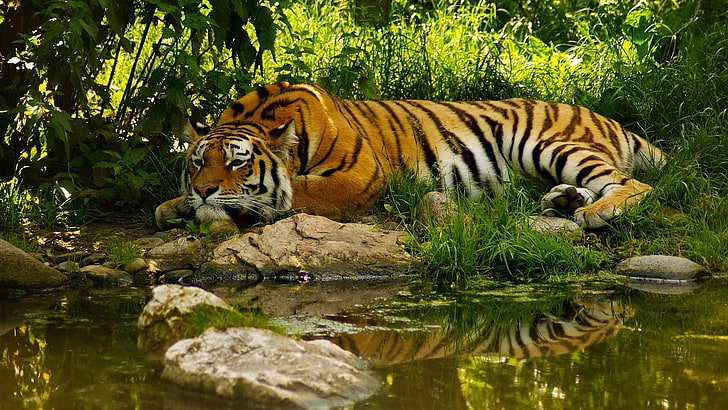

The Sundarbans, a UNESCO World Heritage Site, is the largest tidal halophytic mangrove forest in the world. Located in the delta of the Ganges, Brahmaputra, and Meghna rivers, it spans Bangladesh and India. The Sundarbans is famous for its unique biodiversity, serving as a critical habitat for the Bengal tiger, spotted deer, saltwater crocodiles, and a wide variety of bird species.

Visitors to the Sundarbans can experience the lush beauty of the mangroves by taking boat tours, where they might spot the majestic Bengal tiger or witness the daily activities of local fishermen. The serene beauty of the rivers and mangrove trees provides a tranquil escape from the bustling urban life.
Learn more about Sundarbans.